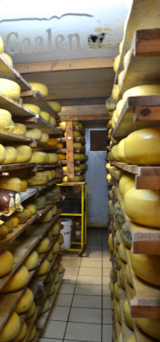
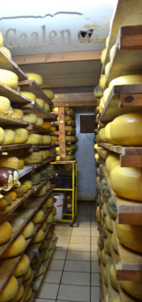
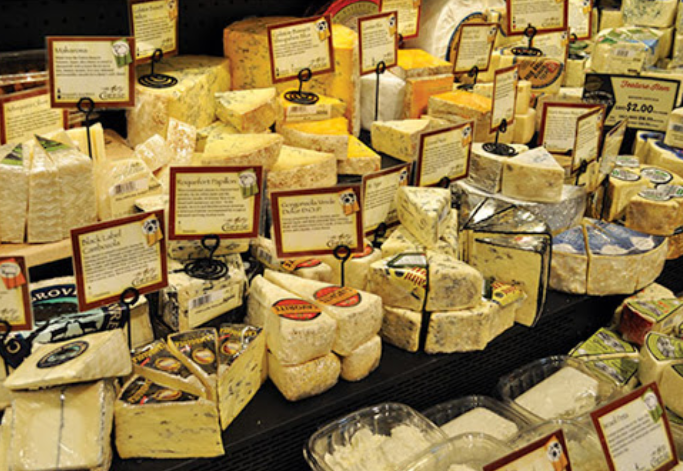
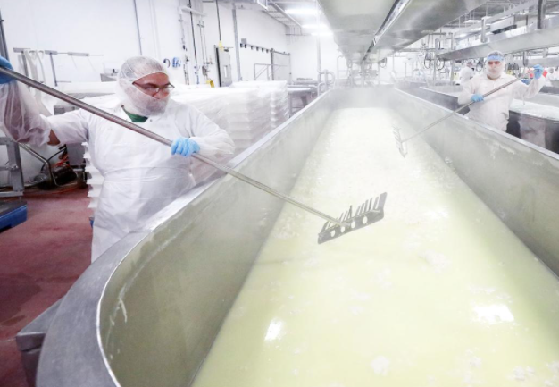

Types of Specialty Cheese
- Fresh Cheese - Popular examples: Mascarpone, Boursin Spreadable Cheese, Fresh Mozzarella)
- Soft Cheese - Popular examples: Harbison, Brie, Camembert, Chevre
- Semi-Soft Cheese - Popular examples: Young Gouda, Havarti, Fontina, Swiss
- Semi-Firm Cheese - Popular examples: Edam, Cheddar, Gruyere, Comte
- Hard Cheese - Popular Examples: Parmiggiano Reggiano, Aged Gouda, Pecorino Romano, Manchego
- Blue Cheese - Popular Examples: Stilton, Roquefort, Gorgonzola


The Production Process
- The first step in the cheese making process begins at the farm. The milk quality of the cow is one of the most essential components to high quality cheese. This step is also proof that no two specialty cheeses are the same. The traits of milk even will differ depending on the time of year it is produced.
- The next step is separating the curd from the why. The amount of different cheeses you can make based off of this simple step is astounding.